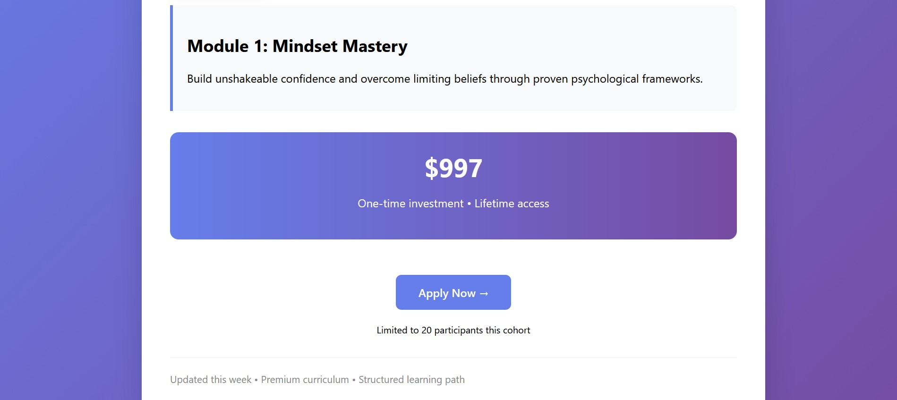

Starter
Perfect if you just need a clean, professional link.
From $150
- • Up to 3 pages mapped from Notion
- • Clean, modern dark UI
- • Mobile & tablet responsive
- • Basic SEO setup
Typical timeline: 3–5 days from kick‑off.
Done-for-you Notion websites – no subscriptions.
I turn Notion pages into premium websites AND build pixel-perfect web apps like Spotify.
Available worldwide • Fast response (GMT+3)
Serving clients in USA • Europe • Dubai • Africa • Australia
50+ live sites • Average client gets 3–10x more bookings • From $150
Spotify Clone • Focus.so Clone • 50+ Projects Delivered
Trusted by coaches, SaaS founders, and agencies worldwide
Built on top of your existing Notion workspace.

Safraeel · Notion → Website
Turning messy docs into premium, bookable sites.

Case study
Your content stays in Notion. I turn it into a premium site that looks like a real product, loads fast, and is easy to update.
Before: default notion.site link

After: branded, conversion-focused site
Client got 47 new signups in first 14 days.
See live siteCase study
Showing that I can go beyond landing pages and build full, app-like experiences with complex UI states.
Before: first Spotify UI version

After: Spotify-inspired, production-level UI

Fully responsive • Real-time playback controls • Playlist management • Dark mode • Built with HTML, Tailwind & vanilla JS
See Live Demo → https://safraeel-spotify.netlify.app/What clients say
"Best investment I made this year. Got 47 new students in 2 weeks!"
— Alex M., Online Course Creator (USA)
★★★★★
Services & pricing
Every package includes performance optimization, responsive design, and launch support. You bring the Notion page – I handle the rest.
Perfect if you just need a clean, professional link.
From $150
For serious creators and coaches who want to look like a product, not a document.
From $350
White‑label builds for studios and agencies with recurring clients.
From $900
Final step
Send me your details. I'll review your Notion page or project and reply with 2–3 concrete upgrade ideas, free.
Prefer chat? Reach out directly: WhatsApp +251 901 337 491 • Telegram @TujiZ
This form is a simple demo for now. I'll reply manually on WhatsApp or email.